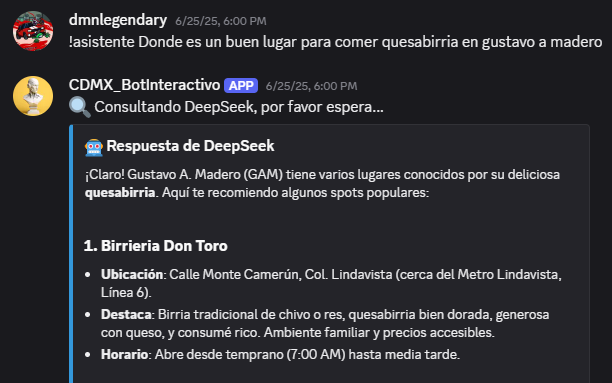

AI-Powered Discord Chatbot

Developed in 2025, this project bridges the gap between conversational AI and real-time utility within social environments. I engineered an interactive Discord bot designed to provide seamless, intelligent responses and environmental data directly to users within their server ecosystem.
Technical Implementation
The core challenge of this project was ensuring low-latency interactions while relying on multiple external data sources. To achieve this, the architecture was built around asynchronous request handling and efficient data parsing.
Key Features
- LLM-Driven Conversations: Integrated with the OpenRouter API to power natural language processing, allowing the bot to engage in complex, context-aware conversations.
- Real-Time Environmental Data: Utilized the OpenWeather RESTful API to fetch and deliver accurate, up-to-the-minute weather and environmental metrics upon user request.
- Optimized Performance: Handled asynchronous requests and optimized JSON data parsing to prevent blocking operations, ensuring smooth, low-latency user interactions even during high server traffic.
Technologies & Tools
- Language: Python
- Architecture: RESTful APIs
- Data Handling: JSON, Asynchronous Programming
- Integrations: OpenRouter, OpenWeatherMap